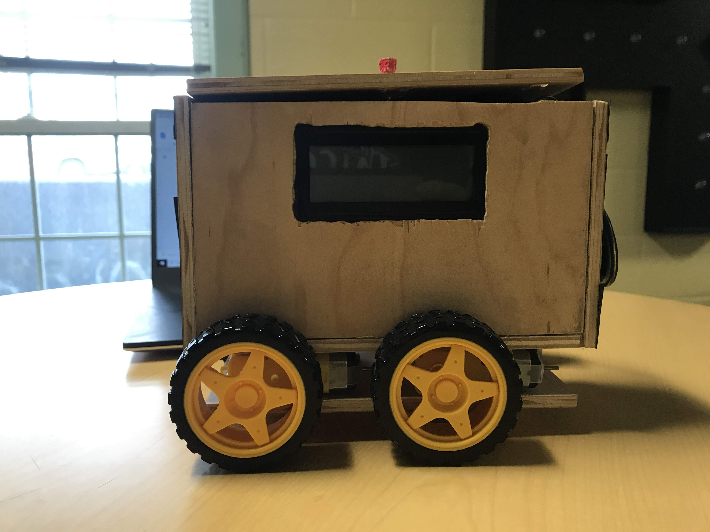
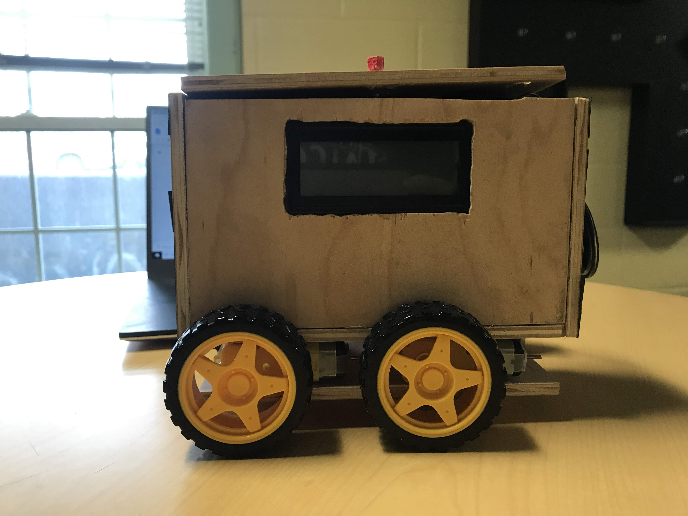

Union College Event Calendar
January-April 2021
In January of 2021, I was tasked with building a more modern-looking and accessible event dashboard for Union College's Admissions department. Before the beginning of the project and throughout the design process, I solicited feedback from the Admissions team on features that they wanted implemented. I drew proposed designs for the page and made proof-of-concept solutions before implementing the technical solution.
The solution I implemented uses Slate portal editor and the FullCalendar JavaScript library to display a JSON stream of event objects on a calendar that can be filtered by event type. I also created filter checkboxes such that the user can manipulate the events displayed, and I implemented the ability to change the filters that are selected by default depending on parameters passed to the URL. The page was used in production in March 2021, and prospective students for the class of 2025 used the page to sign up for admitted student events.


 
